matplotlib 是python最著名的绘图库，它提供了一整套和matlab相似的命令API，十分适合交互式地进行制图。而且也可以方便地将它作为绘图控件，嵌入GUI应用程序中。
它的文档相当完备，并且Gallery页面中有上百幅缩略图，打开之后都有源程序。因此如果你需要绘制某种类型的图，只需要在这个页面中浏览/复制/粘贴一下，基本上都能搞定。
本章节作为matplotlib的入门介绍，将较为深入地挖掘几个例子，从中理解和学习matplotlib绘图的一些基本概念。
1 快速绘图
matplotlib的pyplot子库提供了和matlab类似的绘图API，方便用户快速绘制2D图表。让我们先来看一个简单的例子：
1 2 3 | %matplotlib inline import matplotlib.pyplot as plt import numpy as np |
1 2 3 4 5 6 7 8 9 10 11 12 13 14 15 16 | # -*- coding: utf-8 -*- x = np.linspace(0, 10, 1000) y = np.sin(x) z = np.cos(x**2) plt.figure(figsize=(8,4)) #调用figure创建一个Figure绘图对象，并且使它成为当前的绘图对象 plt.plot(x,y,label="$sin(x)$",color="red",linewidth=2) #调用plot函数在当前的绘图对象中进行绘图 plt.plot(x,z,"b--",label="$cos(x^2)$") #通过一系列函数设置绘图对象的各个属性 plt.xlabel("Time(s)") plt.ylabel("Volt") plt.title("PyPlot First Example") plt.ylim(-1.2,1.2) plt.legend() plt.savefig("test1.png") #图像的大小是576*288像素,默认dpi为72 #plt.savefig("test2.png",dpi=80) plt.show() #显示出我们创建的所有绘图对象 |
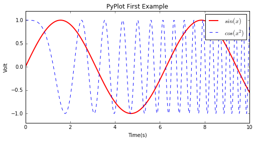
pylab模块
matplotlib还提供了名为pylab的模块，其中包括了许多numpy和pyplot中常用的函数，方便用户快速进行计算和绘图，可以用于IPython中的快速交互式使用。
通过figsize参数可以指定绘图对象的宽度和高度，单位为英寸；dpi参数指定绘图对象的分辨率，即每英寸多少个像素，缺省值为80。因此本例中所创建的图表窗口的宽度为8*80 = 640像素。
但是用工具栏中的保存按钮保存下来的png图像的大小是800*400像素。这是因为保存图表用的函数savefig使用不同的DPI配置，savefig函数也有一个dpi参数，如果不设置的话，将使用matplotlib配置文件中的配置，此配置可以通过如下语句进行查看，关于配置文件将在后面的章节进行介绍：
1 2 | import matplotlib matplotlib.rcParams["savefig.dpi"] |
1 | 72.0 |
plot函数的调用方式很灵活，第一句将x,y数组传递给plot之后，用关键字参数指定各种属性：
label : 给所绘制的曲线一个名字，此名字在图示(legend)中显示。只要在字符串前后添加”$”符号，matplotlib就会使用其内嵌的latex引擎绘制的数学公式。
color : 指定曲线的颜色
* linewidth : 指定曲线的宽度
2 配置属性
matplotlib所绘制的图的每个组成部分都对应有一个对象，我们可以通过调用这些对象的属性设置方法set_*或者pyplot的属性设置函数setp设置其属性值。例如plot函数返回一个 matplotlib.lines.Line2D 对象的列表，下面的例子显示如何设置Line2D对象的属性：
1 2 3 4 | x = np.arange(0, 5, 0.1) line = plt.plot(x, x*x) # plot返回含有一个Line2D对象的列表 # 调用Line2D对象的set_*方法设置属性值 line[0].set_antialiased(False) #通过line[0]获取其第一个元素（Line2D对象） |
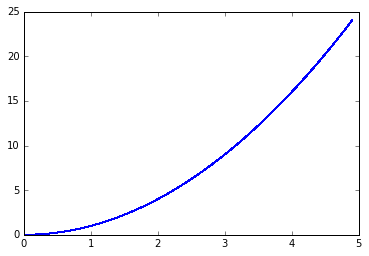
1 2 3 4 | # 同时绘制sin和cos两条曲线，lines是一个有两个Line2D对象的列表 lines = plt.plot(x, np.sin(x), x, np.cos(x)) # 调用setp函数同时配置多个Line2D对象的多个属性值 plt.setp(lines, color="r", linewidth=2.0) |
1 | [None, None, None, None] |
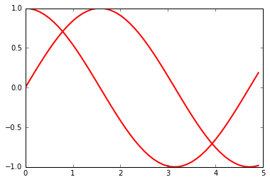
1 | lines
|
1 2 | [<matplotlib.lines.Line2D at 0x10ab36d8>, <matplotlib.lines.Line2D at 0x10ab3470>] |
同样我们可以通过调用Line2D对象的get_*方法，或者plt.getp函数获取对象的属性值：
1 | line[0].get_linewidth() #调用Line2D对象的get_*方法 |
1 | 1.0 |
1 | plt.getp(lines[0], "color") #plt.getp函数获取对象的属性值,返回color属性 |
1 | 'r' |
1 | plt.getp(lines[1]) # 输出全部属性 |
1 2 3 4 5 6 7 8 9 10 11 12 13 14 15 16 17 18 19 20 21 22 23 24 25 26 27 28 29 30 31 32 33 34 35 36 37 38 39 40 41 42 43 44 45 | agg_filter = None
alpha = None
animated = False
antialiased or aa = True
axes = Axes(0.125,0.125;0.775x0.775)
children = []
clip_box = TransformedBbox(Bbox([[0.0, 0.0], [1.0, 1.0]]), Co...
clip_on = True
clip_path = None
color or c = r
contains = None
dash_capstyle = butt
dash_joinstyle = round
data = (array([ 0. , 0.1, 0.2, 0.3, 0.4, 0.5, 0.6, ...
drawstyle = default
figure = Figure(480x320)
fillstyle = full
gid = None
label = _line1
linestyle or ls = -
linewidth or lw = 2.0
marker = None
markeredgecolor or mec = r
markeredgewidth or mew = 0.5
markerfacecolor or mfc = r
markerfacecoloralt or mfcalt = none
markersize or ms = 6.0
markevery = None
path = Path(array([[ 0. , 1. ], [ 0...
path_effects = []
picker = None
pickradius = 5
rasterized = None
sketch_params = None
snap = None
solid_capstyle = projecting
solid_joinstyle = round
transform = CompositeGenericTransform(TransformWrapper(Blended...
transformed_clip_path_and_affine = (None, None)
url = None
visible = True
xdata = [ 0. 0.1 0.2 0.3 0.4 0.5]...
xydata = [[ 0. 1. ] [ 0.1 0.995004...
ydata = [ 1. 0.99500417 0.98006658 0.95533649 ...
zorder = 2
|
注意getp函数只能对一个对象进行操作，它有两种用法：
- 指定属性名：返回对象的指定属性的值
- 不指定属性名：打印出对象的所有属性和其值
matplotlib的整个图表为一个Figure对象，此对象在调用plt.figure函数时返回，我们也可以通过plt.gcf函数获取当前的绘图对象：
1 2 | f = plt.gcf() plt.getp(f) |
1 2 3 4 5 6 7 8 9 10 11 12 13 14 15 16 17 18 19 20 21 22 23 24 25 26 27 28 29 30 31 32 33 34 35 36 | agg_filter = None
alpha = None
animated = False
axes = []
children = [<matplotlib.patches.Rectangle object at 0x0000000...
clip_box = None
clip_on = True
clip_path = None
contains = None
default_bbox_extra_artists = []
dpi = 80.0
edgecolor = (1, 1, 1, 0)
facecolor = (1, 1, 1, 0)
figheight = 4.0
figure = None
figwidth = 6.0
frameon = True
gid = None
label =
path_effects = []
picker = None
rasterized = None
size_inches = [ 6. 4.]
sketch_params = None
snap = None
tight_layout = False
transform = IdentityTransform()
transformed_clip_path_and_affine = (None, None)
url = None
visible = True
window_extent = TransformedBbox(Bbox([[0.0, 0.0], [6.0, 4.0]]), Af...
zorder = 0
<matplotlib.figure.Figure at 0x126bbe80>
|
Figure对象有一个axes属性，其值为AxesSubplot对象的列表，每个AxesSubplot对象代表图表中的一个子图，前面所绘制的图表只包含一个子图，当前子图也可以通过plt.gca获得
用plt.getp可以发现AxesSubplot对象有很多属性，例如它的lines属性为此子图所包括的 Line2D 对象列表：
1 2 | alllines = plt.getp(plt.gca(), "lines") alllines |
1 | <a list of 0 Line2D objects> |
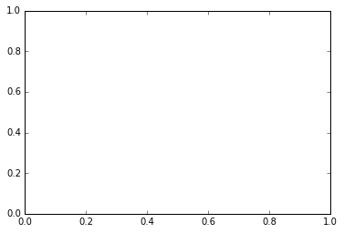
1 | plt.getp(plt.gca()) |
1 2 3 4 5 6 7 8 9 10 11 12 13 14 15 16 17 18 19 20 21 22 23 24 25 26 27 28 29 30 31 32 33 34 35 36 37 38 39 40 41 42 43 44 45 46 47 48 49 50 51 52 53 54 55 56 57 58 59 60 61 62 63 64 65 66 67 68 69 70 71 72 73 74 | adjustable = box
agg_filter = None
alpha = None
anchor = C
animated = False
aspect = auto
autoscale_on = True
autoscalex_on = True
autoscaley_on = True
axes = Axes(0.125,0.125;0.775x0.775)
axes_locator = None
axis_bgcolor = w
axisbelow = False
children = [<matplotlib.spines.Spine object at 0x00000000116A...
clip_box = None
clip_on = True
clip_path = None
contains = None
cursor_props = (1, (0.0, 0.0, 0.0, 1.0))
data_ratio = 1.0
default_bbox_extra_artists = [<matplotlib.spines.Spine object at 0x00000000116A...
figure = Figure(480x320)
frame_on = True
geometry = (1, 1, 1)
gid = None
images = <a list of 0 AxesImage objects>
label =
legend = None
legend_handles_labels = ([], [])
lines = <a list of 0 Line2D objects>
navigate = True
navigate_mode = None
path_effects = []
picker = None
position = Bbox(x0=0.125, y0=0.125, x1=0.9, y1=0.9)
rasterization_zorder = None
rasterized = None
renderer_cache = None
shared_x_axes = <matplotlib.cbook.Grouper object at 0x000000000AEB...
shared_y_axes = <matplotlib.cbook.Grouper object at 0x000000000AEB...
sketch_params = None
snap = None
subplotspec = <matplotlib.gridspec.SubplotSpec object at 0x00000...
title =
transform = IdentityTransform()
transformed_clip_path_and_affine = (None, None)
url = None
visible = True
window_extent = TransformedBbox(Bbox([[0.125, 0.125], [0.9, 0.9]])...
xaxis = XAxis(60.000000,40.000000)
xaxis_transform = BlendedGenericTransform(CompositeGenericTransform(...
xbound = (0.0, 1.0)
xgridlines = <a list of 6 Line2D xgridline objects>
xlabel =
xlim = (0.0, 1.0)
xmajorticklabels = <a list of 6 Text xticklabel objects>
xminorticklabels = <a list of 0 Text xticklabel objects>
xscale = linear
xticklabels = <a list of 6 Text xticklabel objects>
xticklines = <a list of 12 Text xtickline objects>
xticks = [ 0. 0.2 0.4 0.6 0.8 1. ]
yaxis = YAxis(60.000000,40.000000)
yaxis_transform = BlendedGenericTransform(BboxTransformTo(Transforme...
ybound = (0.0, 1.0)
ygridlines = <a list of 6 Line2D ygridline objects>
ylabel =
ylim = (0.0, 1.0)
ymajorticklabels = <a list of 6 Text yticklabel objects>
yminorticklabels = <a list of 0 Text yticklabel objects>
yscale = linear
yticklabels = <a list of 6 Text yticklabel objects>
yticklines = <a list of 12 Line2D ytickline objects>
yticks = [ 0. 0.2 0.4 0.6 0.8 1. ]
zorder = 0
|

3 配置文件
一幅图有许多需要配置的属性，例如颜色、字体、线型等等。我们在绘图时，并没有一一对这些属性进行配置，许多都直接采用了Matplotlib的缺省配置。Matplotlib将缺省配置保存在一个文件中，通过更改这个文件，我们可以修改这些属性的缺省值。
通过下面的语句可以获得目前使用的配置文件的路径：
import matplotlib
matplotlib.matplotlib_fname()
如果你用文本编辑器打开此配置文件的话，你会发现它实际上是定义了一个字典。为了对众多的配置进行区分，关键字可以用点分开。
配置文件的读入可以使用 rc_params 函数，它返回一个配置字典：
1 | matplotlib.rc_params() |
1 2 3 4 5 6 7 8 9 10 11 12 13 14 15 16 17 18 19 20 21 22 23 24 25 26 27 28 29 30 31 32 33 34 35 36 37 38 39 40 41 42 43 44 45 46 47 48 49 50 51 52 53 54 55 56 57 58 59 60 61 62 63 64 65 66 67 68 69 70 71 72 73 74 75 76 77 78 79 80 81 82 83 84 85 86 87 88 89 90 91 92 93 94 95 96 97 98 99 100 101 102 103 104 105 106 107 108 109 110 111 112 113 114 115 116 117 118 119 120 121 122 123 124 125 126 127 128 129 130 131 132 133 134 135 136 137 138 139 140 141 142 143 144 145 146 147 148 149 150 151 152 153 154 155 156 157 158 159 160 161 162 163 164 165 166 167 168 169 170 171 172 173 174 175 176 177 178 179 180 181 182 183 184 185 186 187 188 189 190 191 192 193 194 195 196 197 198 199 200 201 202 203 204 205 206 207 208 209 210 211 212 213 214 215 216 217 218 219 220 221 222 223 224 225 226 227 228 229 230 231 232 233 234 235 236 237 238 239 240 241 242 243 244 245 246 247 248 249 250 251 252 253 254 255 256 257 258 259 260 261 262 263 264 265 266 267 268 269 270 271 272 273 274 275 276 277 278 279 280 281 282 283 284 285 286 287 288 289 | RcParams({u'agg.path.chunksize': 0,
u'animation.avconv_args': [],
u'animation.avconv_path': u'avconv',
u'animation.bitrate': -1,
u'animation.codec': u'mpeg4',
u'animation.convert_args': [],
u'animation.convert_path': u'convert',
u'animation.ffmpeg_args': [],
u'animation.ffmpeg_path': u'ffmpeg',
u'animation.frame_format': u'png',
u'animation.html': u'none',
u'animation.mencoder_args': [],
u'animation.mencoder_path': u'mencoder',
u'animation.writer': u'ffmpeg',
u'axes.axisbelow': False,
u'axes.edgecolor': u'k',
u'axes.facecolor': u'w',
u'axes.formatter.limits': [-7, 7],
u'axes.formatter.use_locale': False,
u'axes.formatter.use_mathtext': False,
u'axes.formatter.useoffset': True,
u'axes.grid': False,
u'axes.grid.axis': u'both',
u'axes.grid.which': u'major',
u'axes.hold': True,
u'axes.labelcolor': u'k',
u'axes.labelpad': 5.0,
u'axes.labelsize': u'medium',
u'axes.labelweight': u'normal',
u'axes.linewidth': 1.0,
u'axes.prop_cycle': cycler(u'color', [u'b', u'g', u'r', u'c', u'm', u'y', u'k']),
u'axes.spines.bottom': True,
u'axes.spines.left': True,
u'axes.spines.right': True,
u'axes.spines.top': True,
u'axes.titlesize': u'large',
u'axes.titleweight': u'normal',
u'axes.unicode_minus': True,
u'axes.xmargin': 0.0,
u'axes.ymargin': 0.0,
u'axes3d.grid': True,
u'backend': u'TkAgg',
u'backend.qt4': u'PyQt4',
u'backend.qt5': u'PyQt5',
u'backend_fallback': True,
u'boxplot.bootstrap': None,
u'boxplot.boxprops.color': u'b',
u'boxplot.boxprops.linestyle': u'-',
u'boxplot.boxprops.linewidth': 1.0,
u'boxplot.capprops.color': u'k',
u'boxplot.capprops.linestyle': u'-',
u'boxplot.capprops.linewidth': 1.0,
u'boxplot.flierprops.color': u'b',
u'boxplot.flierprops.linestyle': u'none',
u'boxplot.flierprops.linewidth': 1.0,
u'boxplot.flierprops.marker': u'+',
u'boxplot.flierprops.markeredgecolor': u'k',
u'boxplot.flierprops.markerfacecolor': u'b',
u'boxplot.flierprops.markersize': 6.0,
u'boxplot.meanline': False,
u'boxplot.meanprops.color': u'r',
u'boxplot.meanprops.linestyle': u'-',
u'boxplot.meanprops.linewidth': 1.0,
u'boxplot.medianprops.color': u'r',
u'boxplot.medianprops.linestyle': u'-',
u'boxplot.medianprops.linewidth': 1.0,
u'boxplot.notch': False,
u'boxplot.patchartist': False,
u'boxplot.showbox': True,
u'boxplot.showcaps': True,
u'boxplot.showfliers': True,
u'boxplot.showmeans': False,
u'boxplot.vertical': True,
u'boxplot.whiskerprops.color': u'b',
u'boxplot.whiskerprops.linestyle': u'--',
u'boxplot.whiskerprops.linewidth': 1.0,
u'boxplot.whiskers': 1.5,
u'contour.corner_mask': True,
u'contour.negative_linestyle': u'dashed',
u'datapath': u'c:\\python27\\lib\\site-packages\\matplotlib\\mpl-data',
u'docstring.hardcopy': False,
u'errorbar.capsize': 3.0,
u'examples.directory': u'',
u'figure.autolayout': False,
u'figure.dpi': 80.0,
u'figure.edgecolor': u'w',
u'figure.facecolor': u'0.75',
u'figure.figsize': [8.0, 6.0],
u'figure.frameon': True,
u'figure.max_open_warning': 20,
u'figure.subplot.bottom': 0.1,
u'figure.subplot.hspace': 0.2,
u'figure.subplot.left': 0.125,
u'figure.subplot.right': 0.9,
u'figure.subplot.top': 0.9,
u'figure.subplot.wspace': 0.2,
u'figure.titlesize': u'medium',
u'figure.titleweight': u'normal',
u'font.cursive': [u'Apple Chancery',
u'Textile',
u'Zapf Chancery',
u'Sand',
u'Script MT',
u'Felipa',
u'cursive'],
u'font.family': [u'sans-serif'],
u'font.fantasy': [u'Comic Sans MS',
u'Chicago',
u'Charcoal',
u'ImpactWestern',
u'Humor Sans',
u'fantasy'],
u'font.monospace': [u'Bitstream Vera Sans Mono',
u'DejaVu Sans Mono',
u'Andale Mono',
u'Nimbus Mono L',
u'Courier New',
u'Courier',
u'Fixed',
u'Terminal',
u'monospace'],
u'font.sans-serif': [u'Bitstream Vera Sans',
u'DejaVu Sans',
u'Lucida Grande',
u'Verdana',
u'Geneva',
u'Lucid',
u'Arial',
u'Helvetica',
u'Avant Garde',
u'sans-serif'],
u'font.serif': [u'Bitstream Vera Serif',
u'DejaVu Serif',
u'New Century Schoolbook',
u'Century Schoolbook L',
u'Utopia',
u'ITC Bookman',
u'Bookman',
u'Nimbus Roman No9 L',
u'Times New Roman',
u'Times',
u'Palatino',
u'Charter',
u'serif'],
u'font.size': 12.0,
u'font.stretch': u'normal',
u'font.style': u'normal',
u'font.variant': u'normal',
u'font.weight': u'normal',
u'grid.alpha': 1.0,
u'grid.color': u'k',
u'grid.linestyle': u':',
u'grid.linewidth': 0.5,
u'image.aspect': u'equal',
u'image.cmap': u'jet',
u'image.composite_image': True,
u'image.interpolation': u'bilinear',
u'image.lut': 256,
u'image.origin': u'upper',
u'image.resample': False,
u'interactive': False,
u'keymap.all_axes': [u'a'],
u'keymap.back': [u'left', u'c', u'backspace'],
u'keymap.forward': [u'right', u'v'],
u'keymap.fullscreen': [u'f', u'ctrl+f'],
u'keymap.grid': [u'g'],
u'keymap.home': [u'h', u'r', u'home'],
u'keymap.pan': [u'p'],
u'keymap.quit': [u'ctrl+w', u'cmd+w'],
u'keymap.save': [u's', u'ctrl+s'],
u'keymap.xscale': [u'k', u'L'],
u'keymap.yscale': [u'l'],
u'keymap.zoom': [u'o'],
u'legend.borderaxespad': 0.5,
u'legend.borderpad': 0.4,
u'legend.columnspacing': 2.0,
u'legend.edgecolor': u'inherit',
u'legend.facecolor': u'inherit',
u'legend.fancybox': False,
u'legend.fontsize': u'large',
u'legend.framealpha': None,
u'legend.frameon': True,
u'legend.handleheight': 0.7,
u'legend.handlelength': 2.0,
u'legend.handletextpad': 0.8,
u'legend.isaxes': True,
u'legend.labelspacing': 0.5,
u'legend.loc': u'upper right',
u'legend.markerscale': 1.0,
u'legend.numpoints': 2,
u'legend.scatterpoints': 3,
u'legend.shadow': False,
u'lines.antialiased': True,
u'lines.color': u'b',
u'lines.dash_capstyle': u'butt',
u'lines.dash_joinstyle': u'round',
u'lines.linestyle': u'-',
u'lines.linewidth': 1.0,
u'lines.marker': u'None',
u'lines.markeredgewidth': 0.5,
u'lines.markersize': 6.0,
u'lines.solid_capstyle': u'projecting',
u'lines.solid_joinstyle': u'round',
u'markers.fillstyle': u'full',
u'mathtext.bf': u'serif:bold',
u'mathtext.cal': u'cursive',
u'mathtext.default': u'it',
u'mathtext.fallback_to_cm': True,
u'mathtext.fontset': u'cm',
u'mathtext.it': u'serif:italic',
u'mathtext.rm': u'serif',
u'mathtext.sf': u'sans\\-serif',
u'mathtext.tt': u'monospace',
u'nbagg.transparent': True,
u'patch.antialiased': True,
u'patch.edgecolor': u'k',
u'patch.facecolor': u'b',
u'patch.linewidth': 1.0,
u'path.effects': [],
u'path.simplify': True,
u'path.simplify_threshold': 0.1111111111111111,
u'path.sketch': None,
u'path.snap': True,
u'pdf.compression': 6,
u'pdf.fonttype': 3,
u'pdf.inheritcolor': False,
u'pdf.use14corefonts': False,
u'pgf.debug': False,
u'pgf.preamble': [],
u'pgf.rcfonts': True,
u'pgf.texsystem': u'xelatex',
u'plugins.directory': u'.matplotlib_plugins',
u'polaraxes.grid': True,
u'ps.distiller.res': 6000,
u'ps.fonttype': 3,
u'ps.papersize': u'letter',
u'ps.useafm': False,
u'ps.usedistiller': False,
u'savefig.bbox': None,
u'savefig.directory': u'~',
u'savefig.dpi': 100.0,
u'savefig.edgecolor': u'w',
u'savefig.facecolor': u'w',
u'savefig.format': u'png',
u'savefig.frameon': True,
u'savefig.jpeg_quality': 95,
u'savefig.orientation': u'portrait',
u'savefig.pad_inches': 0.1,
u'savefig.transparent': False,
u'svg.fonttype': u'path',
u'svg.image_inline': True,
u'svg.image_noscale': False,
u'text.antialiased': True,
u'text.color': u'k',
u'text.dvipnghack': None,
u'text.hinting': u'auto',
u'text.hinting_factor': 8,
u'text.latex.preamble': [],
u'text.latex.preview': False,
u'text.latex.unicode': False,
u'text.usetex': False,
u'timezone': u'UTC',
u'tk.window_focus': False,
u'toolbar': u'toolbar2',
u'verbose.fileo': u'sys.stdout',
u'verbose.level': u'silent',
u'webagg.open_in_browser': True,
u'webagg.port': 8988,
u'webagg.port_retries': 50,
u'xtick.color': u'k',
u'xtick.direction': u'in',
u'xtick.labelsize': u'medium',
u'xtick.major.pad': 4.0,
u'xtick.major.size': 4.0,
u'xtick.major.width': 0.5,
u'xtick.minor.pad': 4.0,
u'xtick.minor.size': 2.0,
u'xtick.minor.visible': False,
u'xtick.minor.width': 0.5,
u'ytick.color': u'k',
u'ytick.direction': u'in',
u'ytick.labelsize': u'medium',
u'ytick.major.pad': 4.0,
u'ytick.major.size': 4.0,
u'ytick.major.width': 0.5,
u'ytick.minor.pad': 4.0,
u'ytick.minor.size': 2.0,
u'ytick.minor.visible': False,
u'ytick.minor.width': 0.5})
|
在matplotlib模块载入的时候会调用rc_params函数，并把得到的配置字典保存到rcParams变量中。
matplotlib将使用rcParams变量中的配置进行绘图。用户可以直接修改此字典中的配置，所做的改变会反映到此后所绘制的图中。例如下面的脚本所绘制的线将带有圆形的点标识符：
1 2 3 4 | matplotlib.rcParams["lines.marker"] = "o" import pylab pylab.plot([1,2,3],[1,2,3]) pylab.show() |
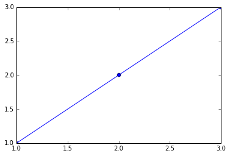
4 绘制多轴图
一个绘图对象(Figure)可以包含多个轴(axis)，在matplotlib中用轴表示一个绘图区域，可以将其理解为子图。上面的第一个例子中，绘图对象只包括一个轴，因此只显示了一个轴(子图)。我们可以使用subplot函数快速绘制有多个轴的图表。subplot函数的调用形式如下：
subplot(numRows, numCols, plotNum)
subplot将整个绘图区域等分为numRows行 * numCols列个子区域，然后按照从左到右，从上到下的顺序对每个子区域进行编号，左上的子区域的编号为1。如果numRows，numCols和plotNum这三个数都小于10的话，可以把它们缩写为一个整数，例如subplot(323)和subplot(3,2,3)是相同的。subplot在plotNum指定的区域中创建一个轴对象。如果新创建的轴和之前创建的轴重叠的话，之前的轴将被删除。
下面的程序创建3行2列共6个轴，通过axisbg参数给每个轴设置不同的背景颜色。
1 2 3 | for idx, color in enumerate("rgbyck"): plt.subplot(320+idx+1, axisbg=color) plt.show() |
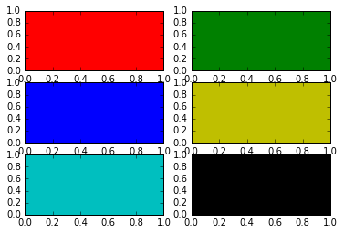
如果希望某个轴占据整个行或者列的话，可以如下调用subplot：
1 2 3 4 | plt.subplot(221) # 第一行的左图 plt.subplot(222) # 第一行的右图 plt.subplot(212) # 第二整行 plt.show() |
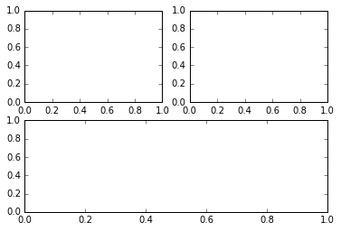
5 Artist对象
matplotlib API包含有三层：
backend_bases.FigureCanvas : 图表的绘制领域
backend_bases.Renderer : 知道如何在FigureCanvas上如何绘图
artist.Artist : 知道如何使用Renderer在FigureCanvas上绘图
FigureCanvas和Renderer需要处理底层的绘图操作。Artist则处理所有的高层结构，例如处理图表、文字和曲线等的绘制和布局。通常我们只和Artist打交道，而不需要关心底层的绘制细节。
Artists分为简单类型和容器类型两种。简单类型的Artists为标准的绘图元件，例如Line2D、 Rectangle、 Text、AxesImage 等等。而容器类型则可以包含许多简单类型的Artists，使它们组织成一个整体，例如Axis、 Axes、Figure等。
直接使用Artists创建图表的标准流程如下：
+ 创建Figure对象
+ 用Figure对象创建一个或者多个Axes或者Subplot对象
+ 调用Axies等对象的方法创建各种简单类型的Artists
下面首先调用pyplot.figure函数创建Figure对象，然后调用Figure对象的add_axes方法在其中创建一个Axes对象，add_axes的参数是一个形如[left, bottom, width, height]的列表，这些数值分别指定所创建的Axes对象相对于fig的位置和大小，取值范围都在0到1之间：
1 2 | fig = plt.figure() ax = fig.add_axes([0.15, 0.1, 0.7, 0.3]) |
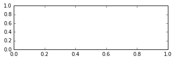
然后我们调用ax的plot方法绘图，创建一条曲线，并且返回此曲线对象(Line2D)。
1 2 | line, = ax.plot([1,2,3],[1,2,1]) ax.lines |
1 | [<matplotlib.lines.Line2D at 0x15d0f940>] |
ax.lines是一个包含ax所有曲线的列表，后续的ax.plot调用会往此列表中添加新的曲线。如果想删除某条曲线的话，直接从此列表中删除即可。
Axes对象还包括许多其它的Artists对象，例如我们可以通过调用set_xlabel设置其X轴上的标题：
1 | ax.set_xlabel("time") |
1 | <matplotlib.text.Text at 0x15e6e9e8> |
Axes的xaxis属性是一个XAxis对象：
1 | ax.xaxis |
1 | <matplotlib.axis.XAxis at 0x15e6eef0> |
XAxis的label属性是一个Text对象：
1 | ax.xaxis.label |
1 | <matplotlib.text.Text at 0x15e6e9e8> |
1 | ax.xaxis.label.get_text() |
1 | u'time' |
5.1 Artist的属性
图表中的每个元素都用一个matplotlib的Artist对象表示，而每个Artist对象都有一大堆属性控制其显示效果。例如Figure对象和Axes对象都有patch属性作为其背景，它的值是一个Rectangle对象。通过设置它的一些属性可以修改Figrue图表的背景颜色或者透明度等属性，下面的例子将图表的背景颜色设置为绿色：
1 2 3 4 | fig = plt.figure() fig.show() fig.patch.set_color("g") fig.canvas.draw() |
1 | <matplotlib.figure.Figure at 0x437cc50> |
patch的color属性通过set_color函数进行设置，属性修改之后并不会立即反映到图表的显示上，还需要调用fig.canvas.draw()函数才能够更新显示。
Artist对象的所有属性都通过相应的 get_* 和 set_* 函数进行读写，如果你想用一条语句设置多个属性的话，可以使用set函数：
1 2 | fig.set(alpha=0.5, zorder=2) fig.set_alpha(0.5*fig.get_alpha()) |
5.2 Figure容器
现在我们知道如何观察和修改已知的某个Artist对象的属性，接下来要解决如何找到指定的Artist对象。前面我们介绍过Artist对象有容器类型和简单类型两种，这一节让我们来详细看看容器类型的内容。
最大的Artist容器是matplotlib.figure.Figure，它包括组成图表的所有元素。图表的背景是一个Rectangle对象，用Figure.patch属性表示。当你通过调用add_subplot或者add_axes方法往图表中添加轴(子图时)，这些子图都将添加到Figure.axes属性中，同时这两个方法也返回添加进axes属性的对象，注意返回值的类型有所不同，实际上AxesSubplot是Axes的子类。
1 2 3 | fig = plt.figure() ax1 = fig.add_subplot(211) ax2 = fig.add_axes([0.1, 0.1, 0.7, 0.3]) |
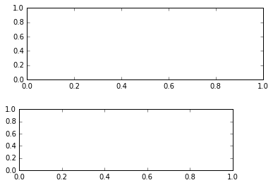
1 | fig.axes |
1 2 | [<matplotlib.axes._subplots.AxesSubplot at 0x1603bc18>, <matplotlib.axes._axes.Axes at 0x16705320>] |
1 | ax1
|
1 | <matplotlib.axes._subplots.AxesSubplot at 0x1603bc18> |
1 | ax2
|
1 | <matplotlib.axes._axes.Axes at 0x16705320> |
不建议直接对Figure.axes属性进行列表操作，而应该使用add_subplot, add_axes, delaxes等方法进行添加和删除操作。
5.3 Axes容器
Axes容器是整个matplotlib库的核心，它包含了组成图表的众多Artist对象，并且有许多方法函数帮助我们创建、修改这些对象。和Figure一样，它有一个patch属性作为背景，当它是笛卡尔坐标时，patch属性是一个Rectangle对象，而当它是极坐标时，patch属性则是Circle对象。例如下面的语句设置Axes对象的背景颜色为绿色：
1 2 3 | fig = plt.figure() ax = fig.add_subplot(111) ax.patch.set_facecolor("green") |
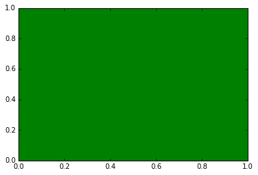
当你调用Axes的绘图方法（例如plot），它将创建一组Line2D对象，并将所有的关键字参数传递给这些Line2D对象，并将它们添加进Axes.lines属性中，最后返回所创建的Line2D对象列表：
1 2 3 | x, y = np.random.rand(2, 100) line, = ax.plot(x, y, "-", color="blue", linewidth=2) line |
1 | <matplotlib.lines.Line2D at 0x160f7dd8> |
1 | ax.lines |
1 | [<matplotlib.lines.Line2D at 0x160f7dd8>] |
与plot方法类似，绘制直方图的方法bar和绘制柱状统计图的方法hist将创建一个Patch对象的列表，每个元素实际上都是Patch的子类Rectangle，并且将所创建的Patch对象都添加进Axes.patches属性中：
1 2 | ax = fig.add_subplot(111) n, bins, rects = ax.hist(np.random.randn(1000), 50, facecolor="blue") |
1 | rects
|
1 | <a list of 50 Patch objects> |
1 | rects[0] |
1 | <matplotlib.patches.Rectangle at 0x12cefbe0> |
1 | ax.patches[0] |
1 | <matplotlib.patches.Rectangle at 0x12cefbe0> |
一般我们不会直接对Axes.lines或者Axes.patches属性进行操作，而是调用add_line或者add_patch等方法，这些方法帮助我们完成许多属性设置工作：
1 2 3 | fig = plt.figure() ax = fig.add_subplot(111) rect = matplotlib.patches.Rectangle((1,1), width=5, height=12) |

1 | print rect.get_axes() # rect的axes属性为空 |
1 | None |
1 | ax.add_patch(rect) # 将rect添加进ax |
1 | <matplotlib.patches.Rectangle at 0x160df940> |
1 | rect.get_axes() # 于是rect的axes属性就是ax |
1 | <matplotlib.axes._subplots.AxesSubplot at 0x13377668> |
1 | ax.get_xlim() # ax的X轴范围为0到1，无法显示完整的rect |
1 | (0.0, 1.0) |
1 | ax.dataLim._get_bounds() # 数据的范围和rect的大小一致 |
1 | (1.0, 1.0, 5.0, 12.0) |
1 | ax.autoscale_view() # 自动调整坐标轴范围 |
1 | ax.get_xlim() # 于是X轴可以完整显示rect |
1 | (1.0, 6.0) |
1 | plt.show() |
1 |
1 | (0.0, 14.0) |
下面列出Axes的创建Artist对象的方法：
| Axes的方法 | 所创建的对象 | 添加进的列表 |
|---|---|---|
| annotate | Annotate | texts |
| bars | Rectangle | patches |
| errorbar | Line2D, Rectangle | lines,patches |
| fill | Polygon | patches |
| hist | Rectangle | patches |
| imshow | AxesImage | images |
| legend | Legend | legends |
| plot | Line2D | lines |
| scatter | PathCollection | Collections |
| text | Text | texts |
下面以绘制散列图(scatter)为例，验证一下：
1 2 3 4 | fig = plt.figure() ax = fig.add_subplot(111) t = ax.scatter([1,2,3], [4,5,6]) t # 返回值为PathCollection对象 |
1 | <matplotlib.collections.PathCollection at 0x16ec5160> |
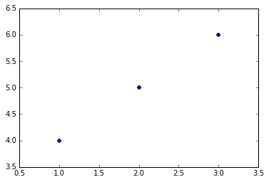
1 | ax.collections # 返回的对象已经添加进了collections列表中 |
1 | [<matplotlib.collections.PathCollection at 0x12dc3400>] |
1 | t.get_sizes() # 获得Collection的点数 |
1 | array([20]) |
5.4 Axis容器
Axis容器包括坐标轴上的刻度线、刻度文本、坐标网格以及坐标轴标题等内容。刻度包括主刻度和副刻度，分别通过Axis.get_major_ticks和Axis.get_minor_ticks方法获得。每个刻度线都是一个XTick或者YTick对象，它包括实际的刻度线和刻度文本。为了方便访问刻度线和文本，Axis对象提供了get_ticklabels和get_ticklines方法分别直接获得刻度线和刻度文本：
1 2 3 | plt.plot([1,2,3],[4,5,6]) axis = plt.gca().xaxis axis.get_ticklocs() # 获得刻度的位置列表 |
1 | array([ 1. , 1.5, 2. , 2.5, 3. ]) |
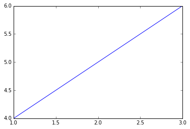
1 | axis.get_ticklabels() # 获得刻度标签列表 |
1 | <a list of 5 Text major ticklabel objects> |
1 | [x.get_text() for x in axis.get_ticklabels()] # 获得刻度的文本字符串 |
1 | [u'1.0', u'1.5', u'2.0', u'2.5', u'3.0'] |
1 | axis.get_ticklines() # 获得主刻度线列表，图的上下刻度线共10条 |
1 | <a list of 10 Line2D ticklines objects> |
1 | axis.get_ticklines(minor=True) # 获得副刻度线列表 |
1 | <a list of 0 Line2D ticklines objects> |
获得刻度线或者刻度标签之后，可以设置其各种属性，下面设置刻度线为绿色粗线，文本为红色并且旋转45度：
1 2 3 4 5 6 7 8 9 10 11 | lines=plt.plot([1,2,3],[4,5,6]) axis = plt.gca().xaxis for label in axis.get_ticklabels(): label.set_color("red") label.set_rotation(45) label.set_fontsize(16) for line in axis.get_ticklines(): line.set_color("green") line.set_markersize(25) line.set_markeredgewidth(3) plt.show() |
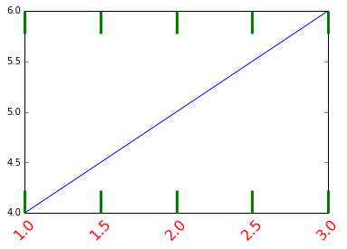
上面的例子中，获得的副刻度线列表为空，这是因为用于计算副刻度的对象缺省为NullLocator，它不产生任何刻度线；而计算主刻度的对象为AutoLocator，它会根据当前的缩放等配置自动计算刻度的位置：
1 | axis.get_minor_locator() # 计算副刻度的对象 |
1 | <matplotlib.ticker.NullLocator at 0xeb17358> |
1 | axis.get_major_locator() # 计算主刻度的对象 |
1 | <matplotlib.ticker.AutoLocator at 0x12d834a8> |
我们可以使用程序为Axis对象设置不同的Locator对象，用来手工设置刻度的位置；设置Formatter对象用来控制刻度文本的显示。下面的程序设置X轴的主刻度为pi/4，副刻度为pi/20，并且主刻度上的文本以pi为单位：
1 2 3 4 5 6 7 8 9 10 11 12 13 14 15 16 17 18 19 20 21 22 23 24 25 26 27 28 29 30 31 32 33 34 35 36 37 38 39 40 41 42 43 44 45 46 47 48 | # -*- coding: utf-8 -*- from matplotlib.ticker import MultipleLocator, FuncFormatter x = np.arange(0, 4*np.pi, 0.01) y = np.sin(x) plt.figure(figsize=(8,4)) plt.plot(x, y) ax = plt.gca() def pi_formatter(x, pos): """ 比较罗嗦地将数值转换为以pi/4为单位的刻度文本 """ m = np.round(x / (np.pi/4)) n = 4 if m%2==0: m, n = m/2, n/2 if m%2==0: m, n = m/2, n/2 if m == 0: return "0" if m == 1 and n == 1: return "$\pi$" if n == 1: return r"$%d \pi$" % m if m == 1: return r"$\frac{\pi}{%d}$" % n return r"$\frac{%d \pi}{%d}$" % (m,n) # 设置两个坐标轴的范围 plt.ylim(-1.5,1.5) plt.xlim(0, np.max(x)) # 设置图的底边距 plt.subplots_adjust(bottom = 0.15) plt.grid() #开启网格 # 主刻度为pi/4 ax.xaxis.set_major_locator( MultipleLocator(np.pi/4) ) # 主刻度文本用pi_formatter函数计算 ax.xaxis.set_major_formatter( FuncFormatter( pi_formatter ) ) # 副刻度为pi/20 ax.xaxis.set_minor_locator( MultipleLocator(np.pi/20) ) # 设置刻度文本的大小 for tick in ax.xaxis.get_major_ticks(): tick.label1.set_fontsize(10) plt.show() |
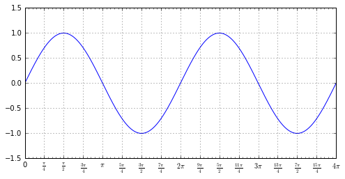
关于刻度的定位和文本格式的东西都在matplotlib.ticker中定义，程序中使用到如下两个类：
MultipleLocator : 以指定值的整数倍为刻度放置刻度线
FuncFormatter : 使用指定的函数计算刻度文本，他会传递给所指定的函数两个参数：刻度值和刻度序号，程序中通过比较笨的办法计算出刻度值所对应的刻度文本
此外还有很多预定义的Locator和Formatter类，详细内容请参考相应的API文档。
Markdown中插入数学公式的方法
1. 使用MathJax引擎
首先在Markdown中添加MathJax引擎很简单，
然后，再使用Tex写公式。\$\$公式\$\$表示行间公式，本来Tex中使用(公式)表示行内公式，但因为Markdown中\是转义字符，所以在Markdown中输入行内公式使用\\(公式\\)，如下代码：
行间公式：
行内公式： \(x=\frac{-b\pm\sqrt{b^2-4ac}}{2a}\)
1 |
标签: python pylab模块 plot 9
创建时间: 2016.12.07
上次修改: 2016.12.07